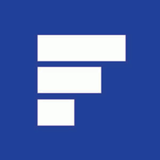

Web Development
Membangun website modern yang responsif dan maintainable.
Saya adalah Frontend Web & Flutter Developer yang fokus pada pengalaman pengguna, performa aplikasi, dan code quality jangka panjang. Saya senang menerjemahkan ide bisnis menjadi produk digital yang tidak hanya terlihat menarik, tetapi juga stabil, mudah dikembangkan, dan siap tumbuh bersama kebutuhan pengguna.
Dalam proses kerja, saya mengutamakan komunikasi yang jelas, eksekusi yang terstruktur, dan perhatian pada detail agar setiap fitur benar-benar memberi dampak nyata untuk user maupun bisnis.
Layanan yang saya kerjakan untuk kebutuhan digital Anda.
Membangun website modern yang responsif dan maintainable.
Pengembangan aplikasi Android/iOS berbasis Flutter dengan satu codebase.
Mengubah desain menjadi antarmuka yang presisi dan interaktif.
Optimasi loading, performa, dan kualitas code production.
Ringkasan pengalaman kerja profesional berdasarkan data resume sebelumnya.

January 2023 - Current
Continuing my role as a Frontend Developer, I am actively
involved in the development of various web application
projects. My primary expertise centers on utilizing Vue.js to
build dynamic and efficient user interfaces, implementing
Tailwind CSS for responsive design, and leveraging TypeScript
to improve code quality, scalability, and maintainability.
October 2022 - Current
In this role, I focus on building comprehensive digital
solutions through Flutter mobile applications and Vue.js
websites. I handle end-to-end development, including feature
implementation, bug fixing, independent testing, and User
Acceptance Testing (UAT) to ensure stable and high-quality
delivery.
October 2019 - December 2022
I developed intuitive and responsive web applications using
Vue.js, and also contributed to cross-platform mobile
development with React Native for Android and iOS. During this
period, I also expanded my skill set by learning Flutter as an
alternative for modern cross-platform mobile solutions.
April 2018 - June 2018
During this internship, I focused on system development and
enhancement using Yii2 Framework. My responsibilities included
validating hotel booking system functionality and contributing
to school website development.
Beberapa karya yang pernah saya kerjakan.
Terbuka untuk freelance project, kolaborasi, dan full-time role.